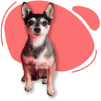

Olá veja os amigos disponíveis para adoção!

2 anos
Porte pequeno
Calmo e educado
Rio de Janeiro (RJ)

3 meses
Porte pequeno
Ativa e carinhosa
Nova Iguaçu (RJ)

6 meses
Porte grande
Ativo e educado
Duque de Caxias (RJ)

3 anos
Porte pequeno
Calma e carinhosa
São Gonçalo (RJ)

8 meses
Porte médio/grande
Brincalhão e amável
Rio de Janeiro (RJ)

1 ano
Porte médio
Ativo e carinhoso
Nova Iguaçu (RJ)

6 meses
Porte médio
Ativa e carinhosa
Duque de Caxias (RJ)

45 dias
Porte grande
Calma e carinhosa
São Gonçalo (RJ)